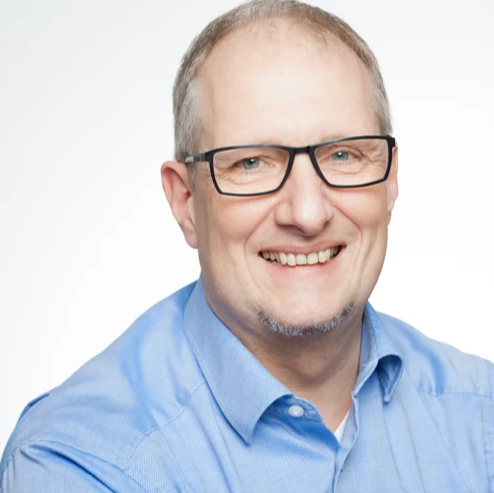

VAN MAKELAAR NAAR REGISSEUR
Meer tijd voor klanten. Minder tijd kwijt aan administratie.
Doe de AI-Scan Bekijk het Programma
Meer tijd voor klanten. Minder tijd kwijt aan administratie.
Doe de AI-Scan Bekijk het Programma
Ronald Scherpenisse is ondernemer, strategisch adviseur, schrijver en een nieuwsgierige ontdekkingsreiziger in de wereld van technologie, innovatie en AI. Met meer dan veertig jaar ervaring helpt Ronald organisaties om complexe ontwikkelingen begrijpelijk en praktisch toepasbaar te maken.
Naast zijn advieswerk schrijft Ronald regelmatig voor iBestuur.
Ronald is daarnaast de drijvende kracht achter The Technosoof, een podcast en platform waar technologie, menselijkheid, ondernemerschap en nieuwsgierigheid samenkomen.
Nee.
Ja, juist.
Reserveer jouw plek.